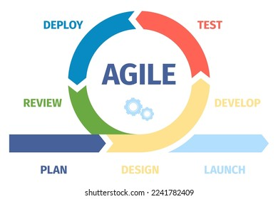
AGILE
A flexible project management methodology and mindset, focused on delivering value quickly through short development iterations
Agile development methodology in the AI era

A flexible project management methodology and mindset, focused on delivering value quickly through short development iterations
Signed by 17 top software experts, laying the foundation for modern software development:
over processes and tools
E.g.: Pair programming, direct code review instead of relying solely on approval processes
over comprehensive documentation
E.g.: Demo the product every 2 weeks instead of writing 100-page documents before coding
over contract negotiation
E.g.: Customer participates in Sprint Review, provides direct feedback on prototype
over following a plan
E.g.: Changing priorities mid-sprint when market conditions shift
AI (ChatGPT, Copilot) accelerates Agile iterations: rapid prototyping → earlier feedback. Spotify, Netflix use AI + Agile to deploy features hundreds of times per day. [Spotify Engineering]
AI shortens the feedback loop: GitHub Copilot boosts coding speed by 40-55% [GitHub Research], AI Testing automatically detects regressions → faster releases, earlier feedback.
Many organizations are adopting "AI-Augmented Agile" — combining Scrum/Kanban with AI tools: using AI to estimate story points, auto-generate test cases, analyze velocity, and predict sprint risks. McKinsey reports AI increases software development productivity by 20-45%. [McKinsey Digital]
| Criteria | Agile | Waterfall |
|---|---|---|
| Flexibility | High, easy to change and adapt. E.g.: adding an AI chatbot feature mid-project | Low, difficult to change after detailed planning |
| Requirements Management | Continuously updated based on real user feedback | Fully defined upfront, rarely changed |
| Product Delivery | Small increments, continuous (demo product every 2-4 weeks) | Single delivery at project end (could be 6-12 months) |
| Customer Involvement | Frequent: review every sprint, direct feedback | Mainly at start (requirements) and end (acceptance) |
| Documentation | Focused on results, "just enough" documentation | Comprehensive, detailed documentation at every stage |
| Risk | Early detection through each sprint, continuously mitigated | Late detection, usually during final testing phase |
According to State of Agile Report [Digital.ai]: over 80% of organizations use Agile, with about 87% using Scrum. Waterfall is only suitable for projects with fixed requirements like embedded systems or medical software. With the AI explosion, requirements change faster than ever → Agile is increasingly important.
The most popular Agile framework, used by over 87% of Agile organizations worldwide
Takeuchi & Nonaka introduced the term "Scrum" in Harvard Business Review, inspired by rugby team formations
Jeff Sutherland & Ken Schwaber defined Scrum at the OOPSLA conference, after successfully applying it at Easel Corporation (1993)
Scrum became closely tied to the Agile Manifesto, establishing its leading role in agile software development
The latest version emphasizes simplicity, removes rigid rules, and is more suitable for cross-industry application
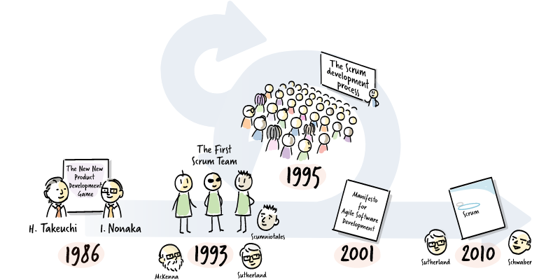
Scrum is based on Empiricism — knowledge comes from experience and real-world observation:
Transparency: AI dashboards automatically aggregate metrics. Inspection: AI analyzes code quality, detects technical debt. Adaptation: AI suggests improvements based on previous sprint data.
The Scrum Guide defines 5 core values that every Scrum team member should practice to build trust and collaboration:
The Scrum process works in Sprint iterations (1-4 weeks):
A list of all features and requirements to be developed. Managed and prioritized by the PO.
The team selects items from the Product Backlog → creates the Sprint Backlog. Sets the Sprint Goal.
The team performs the work. 15-minute Daily Scrum every day to synchronize.
Demo the product to stakeholders → gather feedback. Reflect on the process → improve.
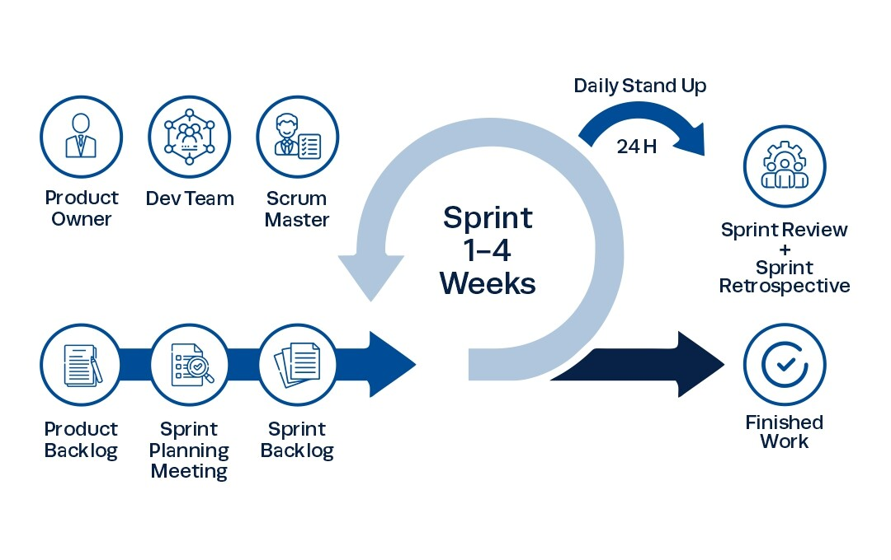
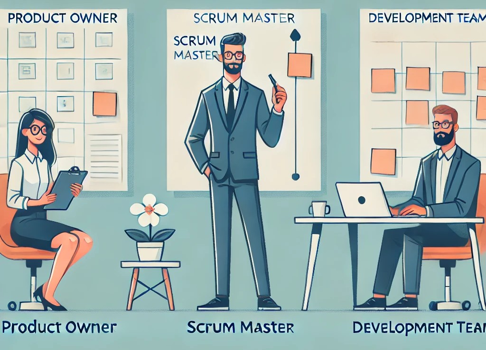
Modern POs use AI to: analyze thousands of user reviews (NLP), predict features with highest ROI, auto-generate user stories from feedback.
SM uses AI to: auto-generate sprint reports, detect bottlenecks from Jira data, analyze team mood via retrospective feedback (sentiment analysis).
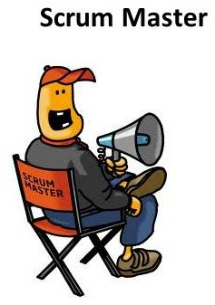
Modern developers use: Copilot/Cursor for faster coding, AI Code Review for bug detection, AI Testing for auto-generating tests. A developer with AI has productivity equivalent to 2-3 traditional developers.
| Aspect | Functional Team | Cross-Functional Team |
|---|---|---|
| Definition | Members specialize in 1 function (E.g.: separate QA team, separate Backend team) | Members have diverse skills, enough to complete end-to-end |
| Collaboration | Requires coordination between many teams, prone to "throw over the wall" | Collaborate within the same team, fast communication, fewer dependencies |
| Speed | Slow due to waiting for other teams, bottlenecks when a team is overloaded | Fast, team handles everything from code → test → deploy |
| Accountability | Owns one part of the product, easy to blame other teams | Owns the entire feature, end-to-end accountability |
| Best Fit | Traditional projects requiring deep expertise in each area | Agile projects requiring fast coordination and high adaptability |
| Real Example | Separate backend, mobile, QA teams → 3 teams for 1 feature | 1 "Squad" at Spotify: 1 backend + 2 frontend + 1 QA + 1 designer = complete 1 feature |
With AI tools, a small cross-functional team can produce output equivalent to a much larger team. AI helps each member take on more roles (E.g.: dev writes tests with AI assistance, designer creates prototypes using AI). [McKinsey Digital]
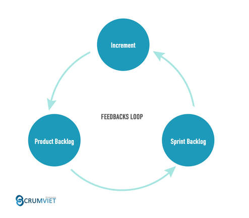
Scrum artifacts: transparent information to track the product, actions, and project progress
The Product Backlog is a prioritized list of all features, requirements, and improvements to be developed:
AI analyzes user data, support tickets, app reviews to automatically suggest backlog prioritization. Jira AI can suggest story point estimation.
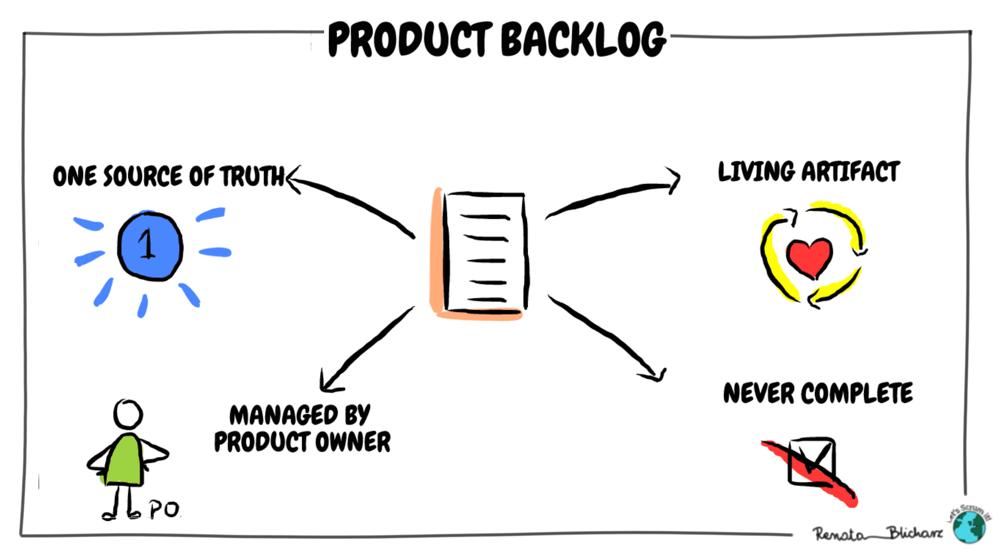
Describe features from the user's perspective
"As a buyer, I want to filter products by price so I can find items within my budget"
~60-70% of backlog items
Defects or errors that need to be fixed
"Checkout page crashes when selecting MoMo payment on iOS 17"
Prioritized by severity: Critical > Major > Minor
Technical work not directly user-facing
"Upgrade Spring Boot from 3.1 to 3.3 to fix security vulnerability"
Supports user stories, reduces technical debt
Research to reduce uncertainty, time-boxed
"Research integrating ChatGPT API into the current chatbot system (2 days)"
Output: knowledge, prototype, PoC
Use ChatGPT/Claude to generate user stories from feature descriptions, auto-write acceptance criteria in Given-When-Then format, and suggest edge cases the PO may not have considered.
As a [user type], I want [feature], so that [benefit].
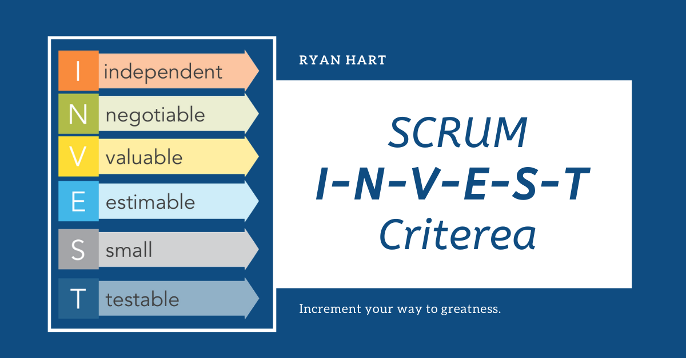
Sentry AI auto-classifies bugs, suggests fixes. Copilot suggests code fixes. AI auto-generates bug reports from crash logs.
DOD is a set of mandatory criteria that all work must meet to be considered "Done". Ensures consistent quality.
SonarQube AI auto-checks code quality, GitHub Actions + AI runs test suites, Snyk AI scans security. Many DOD steps can now be 100% automated with AI → teams focus on creativity instead of manual checks.
Sprint Backlog = selected items from Product Backlog + execution plan for the current Sprint:
User stories, bugs selected during Sprint Planning. Must align with the Sprint Goal.
Each PBI is broken into small tasks (2-8h). E.g.: "Design API endpoint", "Write unit tests", "Code review".
A clear goal for the sprint. E.g.: "Complete login module with two-factor authentication"
Updated daily on Scrum Board (To Do → In Progress → Done) + Burndown Chart.
Key characteristics: Owned by the Dev Team (not PO), can be adjusted during the Sprint, always transparent. Many teams now manage Sprint Backlog directly on Jira Board or Linear.
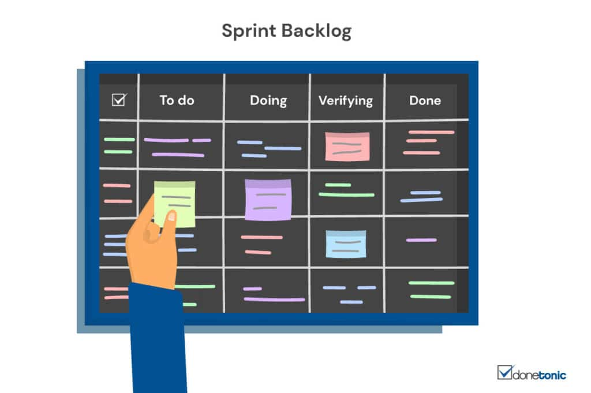
An Increment is the sum of all completed work in the current Sprint + all previous Sprints:
At the end of each Sprint, the Increment must be in a potentially releasable state, even if the PO may not release it immediately.
E.g.: Spotify deploys to production daily but only enables features via feature flags when ready
Each Increment builds on previous Increments, continuously adding value. Sprint 1: Login → Sprint 2: Login + Dashboard → Sprint 3: Login + Dashboard + Reports.
Only work meeting the Definition of Done counts. Code that hasn't been tested = not an Increment.
The Increment must be a meaningful improvement to the product, not just "code is done but unusable".
With AI-powered CI/CD (GitHub Actions, GitLab CI), every commit can auto build, test, deploy → creating continuous Increments. Feature flags + AI A/B testing enable safe releases to specific user groups.
5 key events that create the working rhythm of Scrum: Sprint, Sprint Planning, Daily Scrum, Sprint Review, Sprint Retrospective
A Sprint is a container event that contains all other Scrum events. All work happens within a Sprint.
With AI accelerating development, many teams shorten Sprints to 1 week. AI enables faster coding → shorter feedback loops → earlier value delivery.
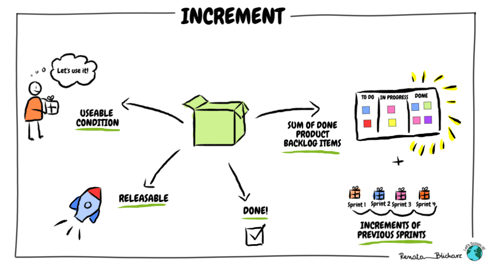
Occurs at the beginning of each Sprint, time-boxed to a maximum of 8 hours for a 1-month Sprint (4 hours for a 2-week Sprint):
PO proposes the Sprint Goal. E.g.: "Complete the online payment module to increase conversion rate by 15%"
The team selects PBIs from the Product Backlog based on velocity and capacity. E.g.: velocity = 30 SP → select ~30 SP of items.
Dev Team breaks each PBI into specific tasks (design, code, test, deploy). Creates the Sprint Backlog.
Jira AI analyzes historical data to predict velocity more accurately. AI suggests task breakdowns based on similar past stories.
A unit measuring complexity (not time) of work. Combines 3 factors:
The most popular estimation method:
| SP | Level | Example |
|---|---|---|
| 1 | Very simple | Change button text, fix typo |
| 3 | Simple | Add form validation |
| 5 | Medium | Create basic CRUD API |
| 8 | Complex | Integrate payment gateway |
| 13 | Very complex | Integrate AI recommendation |
Jira AI / LinearB analyzes historical data to automatically suggest story points. AI also predicts sprint completion probability based on velocity patterns. [Atlassian AI]
A maximum 15-minute meeting every day, at the same time and place:
Slack bot AI collects async standups, auto-summarizes progress. Geekbot, Standuply replace synchronous meetings for remote teams. AI detects blocker patterns and provides early warnings.
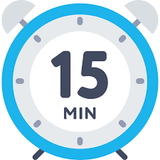
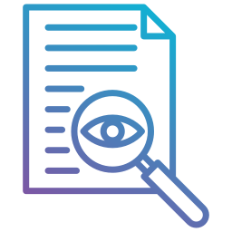
Visualizes work in the Sprint:
| To Do | In Progress | In Review | Done |
|---|---|---|---|
| Login API (5 SP) |
Payment UI (8 SP - An) |
Dashboard (5 SP - Binh) |
User Profile (3 SP ✅) |
| Email notif (3 SP) |
Search API (5 SP - Cuc) |
Registration (5 SP ✅) |
A chart tracking Sprint progress over time:
Jira, Azure DevOps auto-generate real-time burndown charts. AI analyzes patterns to provide early warnings when a sprint is at risk, suggesting actions (E.g.: "Consider removing 1 story of 5SP to hit Sprint Goal").
Occurs at the end of each Sprint, time-boxed to a maximum of 4 hours. Participants: Scrum Team + Stakeholders (customers, managers, partners).
The team demos working software (not slides!) to stakeholders. Only features meeting DOD are demoed.
E.g.: Demo QR payment feature directly on the app, stakeholders try it in real-time
Stakeholders provide direct feedback: "Great!", "Need more filters", "UX isn't intuitive". Feedback is recorded for the PO.
E.g.: Customer requests an AI chatbot support feature → PO adds to backlog
Based on feedback, the PO updates the priority order of the Product Backlog for the next Sprint. Items can be added/removed.
Use AI to analyze stakeholder feedback (sentiment analysis), auto-generate meeting notes, suggest backlog prioritization based on feedback patterns.
The last event of the Sprint, time-boxed to 3 hours. Only the Scrum Team participates (no stakeholders).
E.g.: "Pair programming sped up reviews", "CI/CD pipeline was stable"
E.g.: "Sprint Planning took too long", "Testing was crammed at the end of sprint"
E.g.: "Apply TDD to test in parallel with coding", "Limit WIP = 2 tasks/person"
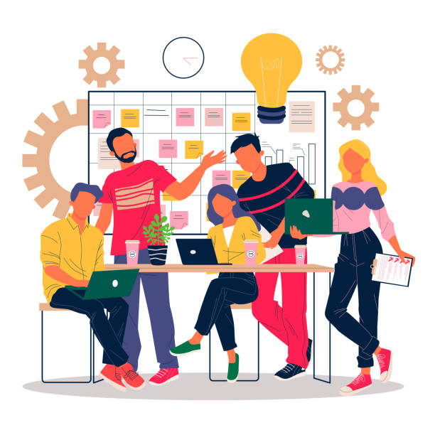
AI analyzes sprint data to detect bad patterns: continuously declining velocity, increasing blockers, scope creep. Proactive alerts help SM act before issues become severe.
| Purpose | Tools |
|---|---|
| Scrum Management | Jira, Azure DevOps, Linear, Trello |
| Communication | Slack, MS Teams, Discord |
| Source Code | GitHub, GitLab, Bitbucket |
| CI/CD | GitHub Actions, Jenkins, GitLab CI |
| Documentation | Confluence, Notion, Google Docs |
| Design | Figma, Adobe XD |
| Testing | Selenium, Cypress, Postman |
| Certification | Organization | Target |
|---|---|---|
| PSM I, II, III | Scrum.org | Scrum Master |
| PSPO I, II | Scrum.org | Product Owner |
| CSM / CSPO | Scrum Alliance | SM / PO |
| PMI-ACP | PMI | Agile Practitioner |
| SAFe Agilist | Scaled Agile | Enterprise Agile |
Next lesson: Software Design Document (SDD)
39 MSc. Nguyen Viet Hung - CMC University